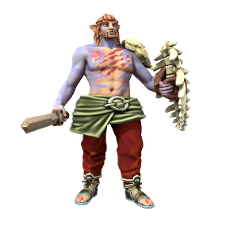

Iotun

Sometimes known simply as "The First People", these giants were the parent species of all homonids in Iuncterra.
🡐 Home
Sometimes known simply as "The First People", these giants were the parent species of all homonids in Iuncterra.
🡐 Home